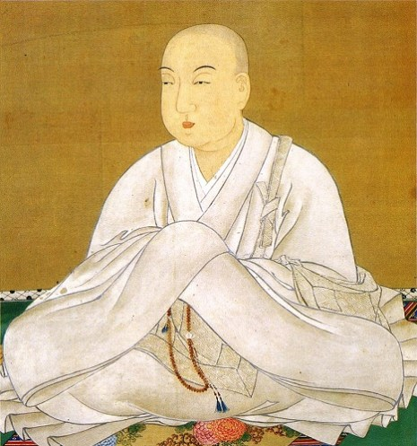

The tournament for imperial succession in 858

According to multiple versions of The Tale of the Heike, which was written centuries later, the court could not decide between two capable successors to the throne following the death of Emperor Montoku (827–858, r. 850–858). The elder candidate, Prince Koretaka, was the first-born son and strove to be a benevolent ruler. The younger candidate, Korehito, was Montoku’s fourth son, but his maternal grandfather was the powerful courtier, Fujiwara no Yoshifusa (804–872). The political stalemate prompted those in power to let ten horse races and a sumo wrestling match determine the next emperor. The special competition drew an impressive audience with every courtier coming to watch the proceedings. The noble spectators split into two camps in support of one prince over the other.
The races were fittingly close, the riders representing Koretaka bested their opponents in the first four races before dropping the next six to Korehito’s riders. Thus, the fate of the next emperor came down to the sumo match. Koretaka’s representative was Natora, who had the strength of sixty ordinary men. Korehito’s champion was the smaller Yoshio. When the two wrestlers clashed for the first time, Natora threw Yoshio some twenty feet, but the nimble Yoshio stuck his landing. The two grappled once again and it appeared that Yoshio would succumb to Natora’s strength. Fearing an imminent defeat, Korehito’s mother sent word about the dire situation to a monk who was praying for the younger candidate’s victory. Upon hearing the news, the monk took his vajra, bashed his head with it, and then offered his brain matter to turn the tide of the match. Miraculously, Yoshio defeated his larger opponent, and Korehito ascended the throne as Emperor Seiwa (850–880, r. 858–876).
Seiwa is depicted here in Buddhist garb following his abdication of the throne.